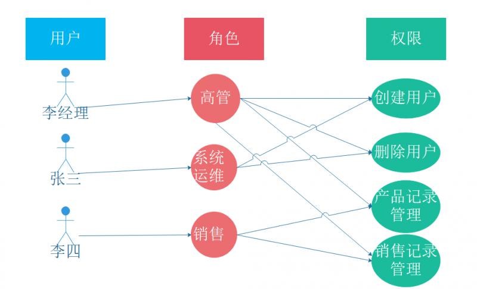

1. 集群安全操作
1.1. 使用安全证书
每个Kubernetes集群都有一个集群根证书颁发机构（root CA）。 集群中的组件通常使用CA来验证API server的证书，由API服务器验证kubelet客户端证书等。为了支持这一点，CA证书包被分发到集群中的每个节点，并作为一个secret附加分发到默认service account上。
k8各个组件需要的证书如下
| CA&Key | etcd | kube-apiserver | kube-proxy | kubelet | kubectl | flanneld |
|---|---|---|---|---|---|---|
| ca.pem | ✔️ | ✔️ | ✔️ | ✔️ | ✔️ | ✔️ |
| ca-key.pem | ||||||
| etcd.pem | ✔️ | |||||
| etcd-key.pem | ✔️ | |||||
| kubernetes.pem | ✔️ | |||||
| kubernetes-key.pem | ✔️ | |||||
| kube-proxy.pem | ✔️ | |||||
| kube-proxy-key.pem | ✔️ | |||||
| admin.pem | ✔️ | |||||
| admin-key.pem | ✔️ | |||||
| flanneld.pem | ✔️ | |||||
| flanneld-key.pem | ✔️ |
1.1.1. 默认情况
默认情况下, kubeadm 会生成运行一个集群所需的全部证书(默认在/etc/kubernetes/pki 文件夹下)。
/etc/kubernetes/pki ├── apiserver.crt ├── apiserver-etcd-client.crt ├── apiserver-etcd-client.key ├── apiserver.key ├── apiserver-kubelet-client.crt ├── apiserver-kubelet-client.key ├── ca.crt ├── ca.key ├── etcd │ ├── ca.crt │ ├── ca.key │ ├── healthcheck-client.crt │ ├── healthcheck-client.key │ ├── peer.crt │ ├── peer.key │ ├── server.crt │ └── server.key ├── front-proxy-ca.crt ├── front-proxy-ca.key ├── front-proxy-client.crt ├── front-proxy-client.key ├── sa.key └── sa.pub
1.1.2. 自定义安全证书
你可以通过提供你自己的证书来改变这个行为策略。
如果要这样做, 你必须将证书文件放置在通过 kubeadm init --cert-dir 命令行参数或者配置文件里的 CertificatesDir 配置项指明的目录中。默认的值是 /etc/kubernetes/pki。
如果给定的证书和密钥对已经存在，kubeadm 将会跳过生成证书的步骤并且直接将已经存在的文件用于规定的案例中。也就是说你可以拷贝一份已存在的 CA 文件到 /etc/kubernetes/pki/ca.crt 和 /etc/kubernetes/pki/ca.key，kubeadm将会使用这份 CA 来签发其余的证书。
1.1.3. 外部 CA 模式
如果只提供了 ca.crt 文件但是没有提供 ca.key 文件也是可以的 (这只对 CA 根证书可用，其它证书不可用)。 如果所有的其它证书和 kubeconfig 文件已就位， kubeadm 检测到满足以上条件就会激活 “外部 CA” 模式。 kubeadm 将会在没有 CA 密钥文件的情况下继续执行。
否则, kubeadm 将独立运行 controller-manager，附加一个 --controllers=csrsigner 的参数，并且指明 CA 证书和密钥。
管理 kubeadm 为 kubelet 提供的 systemd 配置文件
kubeadm 包自带了关于 kubelet 应该如何运行的配置文件。请注意 kubeadm 客户端命令行工具永远不会修改这份 systemd 配置文件。这份 systemd 配置文件属于 kubeadm deb/rpm 包。
加入kubeadm初始化集群时，我们需要建立双向信任。这分为发现（使节点信任Kubernetes控制平面）和TLS引导程序（使Kubernetes控制平面信任节点）。
2. role-based access control (RBAC)
基于角色的访问控制（RBAC）是实施面向企业安全策略的一种有效的访问控制方式。
RBAC权限模型核心授权逻辑如下：
- 某用户是什么角色？
- 某角色具有什么权限？
- 通过角色的权限推导用户的权限

在整个集群内授权 “root” 用户具有 cluster-admin ClusterRole 的 ClusterRoleBinding
kubectl create clusterrolebinding root-cluster-admin-binding --clusterrole=cluster-admin --user=root
3. Kubeadm init 背后的认证机制
-
Kubernetes 集群的自签名证书颁发机构1保存到
ca.crt文件和ca.key私钥文件中 -
API server 的服务证书，使用 ca.crt 作为 CA 生成，并保存到
apiserver.crt文件中，并带有其私钥apiserver.key。此证书应包含以下其他名称： - Kubernetes 服务的内部 clusterIP（服务 CIDR 中的第一个地址，例如，如果服务子网是 10.96.0.0/12 则为 10.96.0.1）
- Kubernetes DNS 名称，例如，如果
--service-dns-domain标志的值为cluster.local，则为 kubernetes.default.svc.cluster.local，再加上默认的 DNS 名称 kubernetes.default.svc、kubernetes.default 和 kubernetes - 节点名称
- --apiserver-advertise-address
- 由用户指定的其他替代名称
- 用于 API server 的安全连接到 kubelet 的客户端证书，使用ca.crt 作为 CA 生成并使用私钥
apiserver-kubelet-client.key保存到文件apiserver-kubelet-client.crt中。这个证书应该在 system:masters 组织中 - 一个用于签名 ServiceAccount 令牌的私钥，该令牌与它的公钥
sa.pub一起保存到sa.key文件中。 - 前端代理的证书颁发机构2保存到
front-proxy-ca.crt文件中，其密钥为front-proxy-ca.key - 前端代理客户端的客户证书，使用
front-proxy-ca.crt作为 CA 生成，并使用其私钥front-proxy-client.key保存到front-proxy-client.crt文件中 - 证书默认存储在
/etc/kubernetes/pki中，但该目录可使用 --cert-dir 标志进行配置。
请注意：
1. 如果给定的证书和私钥对都存在，并且其内容评估符合上述规范，则将使用现有文件并跳过给定证书的生成阶段。这意味着用户可以将现有 CA 复制到 /etc/kubernetes/pki/ca.{crt,key}，然后 kubeadm 将使用这些文件来签署剩余的证书。请参与 使用自定义证书
2. 只有 CA 可以提供 ca.crt 文件，但不提供 ca.key 文件，如果所有其他证书和 kubeconfig 文件已就位，kubeadm 会识别此情况并激活 ExternalCA，这也意味着 controller-manager 中的 csrsigner 控制器将不会启动
3. 如果 kubeadm 在 ExternalCA 模式下运行; 所有的证书都必须由用户提供，因为 kubeadm 本身不能生成它们
4. 在 --dry-run 模式中执行 kubeadm 的情况下，证书文件被写入临时文件夹中
使用 kubeadm alpha phase certs all 命令可以单独调用证书生成动作